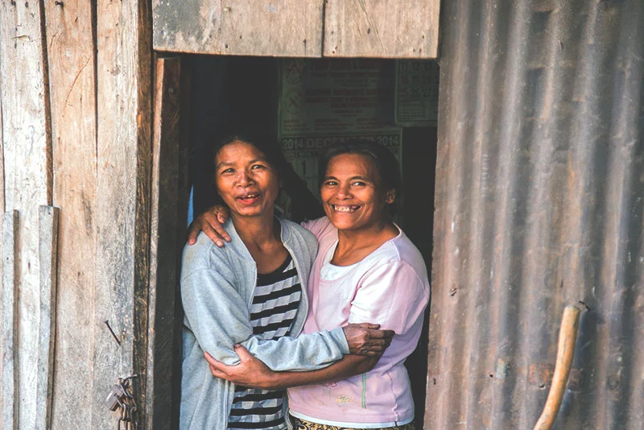
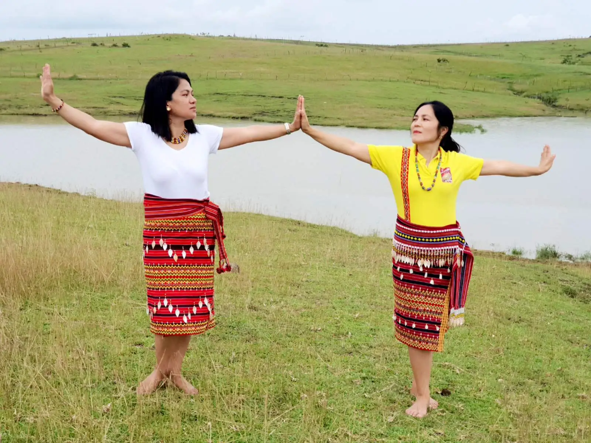

Decked with its rich cultural heritage, Kalinga women seemingly mirror an exhibit of gold; incomparable and matchless. Perhaps one of their defining features is seen beyond their nakedness covered by their tradition of adorning their skin with lace-like tribal patterns and intricate textiles. But if people think that this is what Kalinga women only offer, they are still yet to behold a gripping reason why it is an exhibit of such.
Just like any other stories of misogyny and prejudice, women are being portrayed as weak and inferior to men, and the indigenous Kalinga women are no excuse for that. But hold that thought—women are still valued and even regarded as sacred by the natives due to their nature as ‘life-givers.’ Truth be told, in case of a tribal war, it is considered taboo to kill a woman. Hence, women are specifically not to be harmed as Kabunyan (Supreme Being of the Cordilleras) will curse and bring ruin to the tribe who perpetrated the heinous act for generations to come.
The native tribes of the Cordilleras have been affected by multiple forms of violent conflicts worsened by the proliferation of weapons in the region causing the abandonment of health, education, and economic activities making women vulnerable and more susceptible to insecurity and gender-based violence as they struggle for liberation, democracy, and self-determination.
Societal issues and the tyrannical practices of the Marcos regime in 1970 motivated the indigenous people of Cordillera to step up against their oppressors. The resistance to the Chico River Hydroelectric Dam project by the Marcos administration would have displaced hundreds of the ethnic tribes of the Cordilleras and would have caused flooding and mass destruction in their ancestral lands. To combat this, one of their dirty tactics was to distract the workers by letting women allure them with their nakedness. While the workers are distracted and fascinated by the sight, the other tribe members carried their construction machinery down the mountain to the constabulary barracks. Thanks to these risqué tricks, the government withdrew from the construction and the people eventually got their victory.

Kalinga women have also played important roles in peace building in various ways. As a matter of fact, several elders even vouched that without women, the natives would have been unsuccessful in mediating disputes. As a testament to this, several decades ago, large-scale operations of the New People’s Army (NPA) in the province are feared to happen. At this crucial moment, women took a stand and acted as the mediator in the conflict. They served food and organized peace talks between the government soldiers and members of the NPA to prevent their village from being harmed. Aside from this, Kalinga women also hold a special role in forging the Bodong where they offer food and drink to ease up the tension and calm the tribes.
Nowadays, indigenous women in the Bodong practice is still limited but is slowly being embraced. Perhaps, Nanang Irene Baawa, 64 is one of the notable de facto peace pact holders in Buanao Village in Abra. Nanang Irene assumed the post of being the Nangdon si Bodong because the original holder, her husband has a hearing impairment which impedes him from fulfilling his duties. According to Nanang Irene, Bodong is not only inherited by men who traditionally become peace pact holders, but by the whole family, especially by the wives to preserve and develop their Bodong.
Despite these efforts and clear manifestation of how Kalinga women can make a difference, women are still deprived of leadership positions and their opinions are rarely acknowledged in mediating disputes. Until now, regardless of their traditional perceptions toward themselves, Kalinga women have made commendable individual and collective efforts in gender work and peace building, but the formal recognition of these commitments and the encouragement of their participation are still lacking.
With its stirring impact and rip-roaring uniqueness, it just fits itself that Kalinga women are more than just their nakedness and tattoos, but they blur the line between masculinity and femininity. Let this pride ring volumes embraced by the unabashed self-poise inherent to their very existence.
31 October 2021